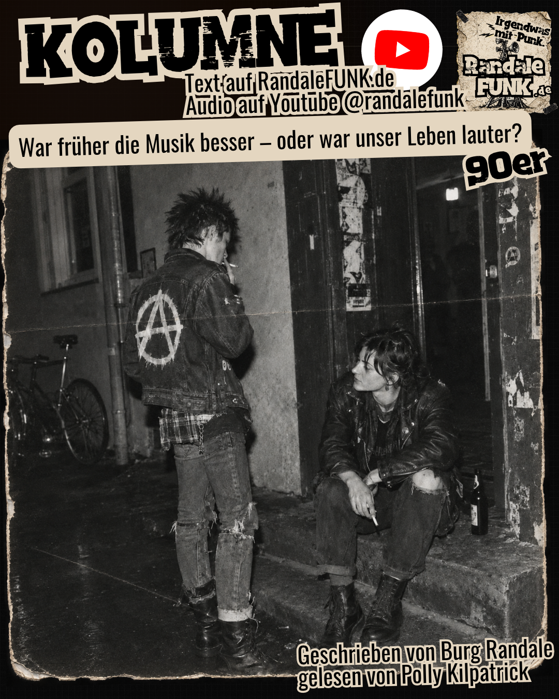

Kolumne
War früher die Musik besser – oder war unser Leben lauter?

Es gibt Songs, bei denen reichen drei Sekunden, und ich bin wieder in den 90ern. Ich kenne den Text, weiß, wann das Schlagzeug einsetzt, und kann mich an Dinge erinnern, die seit fast dreißig Jahren völlig nutzlos in meinem Schädel herumliegen. Manchmal fällt mir sogar wieder ein, wo ich war, als ich eine bestimmte Platte zum ersten Mal gehört habe.
Bei manchen Veröffentlichungen von vor drei Wochen muss ich dagegen nachschauen, wie die Band überhaupt hieß.
Das ist schon ein bisschen peinlich. Schließlich betreibe ich mit RandaleFUNK ein Musikmagazin, höre ständig neue Platten, führe Interviews und beschäftige mich mit Bands, von denen viele Leute noch nie etwas gehört haben. Da ist richtig gutes Zeug dabei. Und trotzdem greife ich privat erstaunlich häufig auf Musik zurück, die schon alt war, als manche der heutigen Musiker geboren wurden.
Noch merkwürdiger finde ich, dass es offenbar nicht nur mir so geht. Bei Interviews mit Musikern landen wir abseits der Kamera immer wieder bei den alten Scheiben. Die Leute veröffentlichen selbst neue Alben, stehen auf Bühnen, haben ihre eigenen Bands am Laufen. Aber sobald wir privat ins Quatschen kommen, fallen Namen und Albumtitel aus einer Zeit, in der das Internet noch Geräusche gemacht hat, wenn man sich einwählte.
Sind wir alle inzwischen hoffnungslose Nostalgiker? Oder war die Musik damals tatsächlich besser?
Seit einiger Zeit beschäftigt mich diese Frage. Verstärkt wurde das Ganze durch eine ARTE-Dokumentation über die 90er, in der es unter anderem darum ging, warum uns Musik und kulturelle Erlebnisse aus dieser Zeit so hartnäckig im Kopf geblieben sind.
Und je länger ich darüber nachdenke, desto mehr merke ich, dass die Antwort mit Musik allein vermutlich gar nicht so viel zu tun hat.
Eine Platte musste man sich leisten können. Und dann hatte man sie.
Erinnert sich noch jemand daran, wie es war, wochenlang nach einer bestimmten Platte zu suchen?
Da hatte irgendein Kumpel eine Band auf einem Sampler entdeckt, im Fanzine stand eine Besprechung oder jemand erzählte nach einem Konzert begeistert von einer Gruppe, die man unbedingt hören müsse. Also wurde gesucht. Im Plattenladen, auf Konzerten, über Mailorder-Kataloge oder bei Leuten, die angeblich alles besorgen konnten.
Und wenn man das Ding endlich in den Händen hielt, hatte man dafür meistens einen beträchtlichen Teil seines verfügbaren Geldes ausgegeben.
Heute klicke ich auf einen Link und habe die Musik innerhalb weniger Sekunden auf den Ohren. Was für ein Luxus! Vor allem für jemanden, der ständig neue Bands entdecken möchte.
Damals war die neue Platte aber erst einmal eine Beschäftigung für die nächsten Tage, manchmal Wochen. Man hörte sie komplett, studierte das Booklet, las Texte, Danksagungen und die Namen anderer Bands. Einige dieser Namen führten irgendwann zur nächsten musikalischen Entdeckung.
Dass ich manche Alben nahezu auswendig kann, hat vermutlich auch damit zu tun, dass ich sie unzählige Male gehört habe. Nicht unbedingt aus musikalischer Ehrfurcht. Sondern weil ich eben nicht jeden Tag zwanzig weitere Veröffentlichungen auf den Tisch bekam.
Selbst Platten, mit denen ich zunächst nichts anfangen konnte, bekamen noch ein paar Chancen. Das Ding war schließlich gekauft. Also lief es weiter.
Heute ist die nächste Band nur einen Klick entfernt. Eine Nummer zündet nicht sofort? Weiter. Der Streamingdienst hat schon etwas Neues vorbereitet.
Dabei ist das gar kein Vorwurf an die Technik. Niemand zwingt mich, nach zwei Songs weiterzuklicken. Ich könnte eine Platte genauso intensiv hören wie früher. Nur mache ich das offenbar seltener.
Und möglicherweise liegt genau da ein Teil des Problems. Ein Lied muss nicht schlechter sein, bloß weil ich es nach drei Wochen vergessen habe. Vielleicht habe ich es schlicht nicht oft genug gehört, um ihm überhaupt einen vernünftigen Platz in meinem Gedächtnis einzuräumen.
Halloween 1997, Cult Arnsberg
Wenn ich an eine Platte denke, die für mich untrennbar mit einer bestimmten Zeit verbunden ist, lande ich ziemlich schnell bei POPPERKLOPPER und Wer sich nicht wehrt … der lebt verkehrt.
1997 erschien das Album. Am 31. Oktober desselben Jahres spielten POPPERKLOPPER beim Tagesschau-Festival im Cult in Arnsberg.
Ich war dabei. Und diesen Abend werde ich wohl nicht so schnell vergessen.
Es war nämlich der Abend meines ersten Nasenbruchs.
Beim Pogo bekam ich versehentlich einen Ellenbogen auf die Nase. Keine große Heldengeschichte. Keine wilde Straßenschlacht. Einfach Pech gehabt, mitten im Konzert.
Wenn ich die Platte heute höre, denke ich trotzdem nicht zuerst an meine kaputte Nase.
Ich denke an einen Freund, mit dem ich damals dort war.
Wir waren in diesen Jahren oft gemeinsam auf Konzerten unterwegs. Musik hören, durch die Gegend fahren, Leute treffen, irgendwelchen Blödsinn machen. Wie das eben so war, wenn man jung war und am Wochenende nicht wusste, wohin mit sich.
Irgendwann verloren wir uns aus den Augen. Nicht durch einen großen Streit oder irgendein dramatisches Ereignis. Der Kontakt verlief sich einfach. Erst sieht man sich seltener, dann eine ganze Weile nicht mehr. Und plötzlich sind Jahre vergangen.
Ungefähr zehn Jahre nach diesem Konzert ist er gestorben.
Erfahren habe ich davon erst über Umwege.
Das beschäftigt mich bis heute gelegentlich. Nicht ständig, aber immer mal wieder. Dann frage ich mich, warum wir irgendwann keinen Kontakt mehr hatten. Warum keiner von uns einfach mal wieder angerufen hat.
Vielleicht kennt ihr das.
Mit dem Wissen von heute hätte man manches sicher anders gemacht. Nur hat man dieses Wissen damals nicht.
Wenn ich heute Wer sich nicht wehrt … höre, ist da also weit mehr als ein altes Punkalbum. Da sind Konzertfahrten, Gespräche, das Cult, eine gebrochene Nase und ein Mensch, mit dem ich ein Stück meines Lebens verbracht habe.
Was soll eine neue Platte dagegen ausrichten?
Das ist keine faire Frage. Sie kann musikalisch noch so großartig sein, sie war damals einfach nicht dabei.
Früher war Langeweile noch eine Beschäftigung
Eine weitere Sache, über die ich in diesem Zusammenhang nachdenke, ist die Langeweile.
Klingt bescheuert, aber ich glaube, die wird heute ziemlich unterschätzt.
In den 90ern gab es gerade in kleineren Städten oft schlicht nichts zu tun. Wenn kein Konzert stattfand, niemand eine Party organisierte und die paar Leute, mit denen man sonst herumhing, auch keine Idee hatten, konnte so ein Wochenende ganz schön lang werden.
Also machte man irgendwas.
Vielleicht gründete jemand eine Band, obwohl keiner richtig spielen konnte. Ein anderer bastelte ein Fanzine zusammen, organisierte mit Freunden einen Auftritt oder suchte einen Raum, in dem man sich regelmäßig treffen konnte.
Natürlich war das nicht automatisch große Kunst. Vieles war ziemlich dilettantisch, manches peinlich, und etliche Ideen verschwanden genauso schnell wieder, wie sie entstanden waren.
Aber man hat es versucht.
Heute muss man sich schon Mühe geben, um sich wirklich zu langweilen. Das Smartphone ist immer dabei. Musik, Filme, Nachrichten, Spiele, irgendein Schwachsinn aus den sozialen Netzwerken. Und wenn man mit allem durch ist, geht es oben im Feed wieder von vorne los.
Ich bin da keinen Deut besser.
Nur frage ich mich, ob uns durch diese ständige Beschäftigung nicht manchmal die Gelegenheit fehlt, selbst auf dumme Ideen zu kommen. Dumme Ideen, aus denen später vielleicht etwas ziemlich Gutes geworden wäre.
Ähnlich verhält es sich mit der Vorfreude. Damals wartete man auf ein Album, ein Konzert oder ein neues Lebenszeichen einer Band. Die Suche nach Informationen war oft schon ein Teil des Erlebnisses.
Heute erfahre ich morgens von einer Veröffentlichung, höre sie mittags und habe abends womöglich schon die nächste auf dem Schirm.
Das ist bequem und eröffnet unfassbar viele Möglichkeiten. Gerade kleine Bands können heute selbst Musik veröffentlichen und Menschen erreichen, die sie mit den damaligen Vertriebswegen vermutlich niemals gefunden hätten. Auch ein Magazin wie RandaleFUNK profitiert davon.
Trotzdem verändert sich etwas, wenn aus einer Entdeckung, auf die man wochenlang hingefiebert hat, ein weiterer Eintrag in einer ständig wachsenden Liste wird.
Und dann fehlt noch etwas: die Leute.
Musik war damals nicht nur das, was aus den Lautsprechern kam. Sie bestimmte häufig, wo man sich aufhielt, wen man traf und mit wem man seine Freizeit verbrachte. Plattenläden, kleine Clubs und Jugendzentren waren Treffpunkte. Da wurde diskutiert, gestritten, gelacht und gelegentlich ziemlicher Mist verzapft.
Eine Szene war etwas, das man gemeinsam erlebt hat. Nicht bloß eine Sammlung von Profilen, denen man online folgt.
Allerdings möchte ich auch hier nicht behaupten, das Internet hätte all das abgeschafft. Wer sich heute in der DIY-Szene umschaut, findet weiterhin Leute, die Konzerte organisieren, Fanzines machen und sich gegenseitig unterstützen.
Vielleicht ist es sogar einfacher geworden, Gleichgesinnte zu finden. Man muss dafür nur irgendwann das Handy aus der Hand legen und tatsächlich hingehen.
Früher erkannte man seine Leute. Angeblich.
Was ich allerdings manchmal vermisse, sind die ganzen optischen Erkennungsmerkmale.
Baggy Pants, Irokesen, Tollen, Bomberjacken, Springerstiefel, bestimmte Turnschuhe, Bandaufnäher und irgendwelche Frisuren, für die man morgens vermutlich mehr Zeit brauchte als für die Schule.
Selbst Schnürsenkel konnten etwas aussagen, wobei deren angeblich eindeutige Farbcodes längst nicht überall dasselbe bedeuteten.
Man sah jemanden zwanzig Meter vor sich und hatte zumindest eine Ahnung, aus welcher Ecke derjenige kam.
Manchmal war das sogar ausgesprochen hilfreich.
Stellt euch vor, euch kommt jemand entgegen. Glatze, Bomberjacke, Springerstiefel. In den 90ern war das für mich durchaus ein Grund, vorsichtig zu werden. Rechte Schläger waren damals keine Geschichte aus irgendeiner Fernsehdokumentation.
Man kommt sich näher. Und erst auf fünf Meter erkennst du den SHARP-Aufnäher.
Skinheads Against Racial Prejudice.
Erleichterung. Vor dir steht möglicherweise jemand, mit dem du wesentlich mehr gemeinsam hast, als du zunächst vermutet hast.
An der Glatze und den Stiefeln hat sich nichts geändert. Nur an deiner Einschätzung.
Und schon sind wir bei der ersten Schwachstelle dieser ganzen optischen Orientierung. Man glaubte oft zu wissen, wen man vor sich hatte. Tatsächlich konnte man sich gewaltig täuschen.
Noch bekloppter wurde es, wenn die vermeintlichen Erkennungsmerkmale darüber entschieden, ob man überhaupt zur eigenen Szene gehören durfte.
Mit dem Freund, von dem ich gerade erzählt habe, war ich einmal auf dem Weg zu einem DRITTE-WAHL-Konzert. Irgendein Jugendzentrum, irgendwo mit der Bahn hin. An den genauen Ort erinnere ich mich nicht mehr.
Unterwegs wurden wir von anderen Leuten gefragt, ob wir auch zu DRITTE WAHL fahren würden.
Klar, taten wir.
Ich freute mich schon, ein paar Gleichgesinnte kennenzulernen.
Pustekuchen.
Statt eines netten Gesprächs bekamen wir ziemlich schnell zu hören, dass wir scheiße aussahen. Offenbar nicht punkig genug.
Mein Kumpel sah damals eher wie ein SHARP-Skin aus. Ich selbst hätte vermutlich problemlos als Gothic oder missglückte Robert-Smith-Kopie durchgehen können. Immerhin hatte ich eine schwarze Jacke mit diversen Punkaufnähern, roten Schnürsenkel und einem aufgesprühten Anarchie-A auf dem Rücken.
Hat wohl nicht gereicht.
Vielleicht fehlte mir der amtliche Punkausweis. Oder die vorgeschriebene Mindestanzahl an Sicherheitsnadeln.
Da sitzen also ein paar Leute im selben Zug, wollen auf dasselbe Konzert, hören vermutlich einen großen Teil derselben Musik und haben nichts Besseres zu tun, als gegenseitig die Klamotten zu kontrollieren.
Solche selbst ernannten Szenewächter gab es schon immer. Heute hängen sie eben häufiger in Kommentarspalten herum und erklären anderen Leuten, welche Bands sie hören dürfen und was angeblich noch Punk ist.
Es war damals also keineswegs alles kameradschaftlich und harmonisch. Auch innerhalb der Szene wurde fleißig ausgegrenzt.
Und vielleicht steckt genau darin ein Widerspruch, über den ich bisher kaum nachgedacht habe.
Ich vermisse diese optischen Erkennungsmerkmale manchmal. Gleichzeitig bin ich froh, dass ihre gesellschaftliche Bedeutung in vielen Bereichen nachgelassen hat.
Tattoos sind heute nichts Besonderes mehr. Selbst Polizisten tragen welche. Bunte Haare und Piercings bedeuten nicht zwangsläufig, dass jemand beruflich oder gesellschaftlich schief angesehen wird.
Früher reichte so etwas vielerorts schon aus, um als Assi abgestempelt zu werden.
Heute kann man aussehen wie ein Mitglied irgendeiner Punkband und gleichzeitig einen völlig bürgerlichen Alltag führen. Ob man das gut findet, ist fast schon egal. Die persönliche Freiheit, sich so zu kleiden, wie man möchte, ist schließlich genau das, wofür viele von uns immer eingetreten sind.
Und trotzdem denke ich manchmal, dass heute alle irgendwie gleich aussehen.
Vielleicht stimmt das überhaupt nicht. Vielleicht kenne ich nur die heutigen Erkennungsmerkmale nicht mehr.
Was weiß denn ich, woran sich ein Siebzehnjähriger heute unter Gleichgesinnten erkennt?
Womöglich bin ich inzwischen einfach zu alt, um die Unterschiede zu sehen.
Die guten alten Zeiten waren für manche ziemlich beschissen
Mit den Klamotten wären wir bei einem grundsätzlichen Problem der Nostalgie.
Unser Gedächtnis scheint eine Vorliebe dafür zu haben, unangenehme Dinge aus alten Erinnerungen herauszuschneiden.
Da erzählen mir Leute beispielsweise, früher sei eine Schlägerei noch eine anständige Angelegenheit gewesen. Man hätte sich zwar aufs Maul gehauen, aber sobald jemand am Boden lag, wäre Schluss gewesen. Nachgetreten habe damals niemand.
Ach komm.
Vielleicht haben euch die Tritte gegen den Schädel auch einfach vergessen lassen, wie übel manche Schlägerei ausgegangen ist.
Heute bekommen wir von brutalen Gewalttaten viel mehr mit. Es wird gefilmt, hochgeladen, geteilt und kommentiert. Ein besonders schlimmer Vorfall kann innerhalb weniger Stunden durch sämtliche sozialen Netzwerke geistern.
Ob bestimmte Gewalttaten heute tatsächlich häufiger vorkommen, lässt sich daraus aber nicht ableiten. Dafür bräuchte man vernünftige Zahlen, nicht ein paar besonders erschreckende Videos.
Früher hatte eben nicht jeder eine Kamera in der Hosentasche. Was außerhalb des eigenen Umfelds passierte, bekam man möglicherweise überhaupt nicht mit.
Und damit sind wir noch lange nicht bei den wirklich üblen Seiten der 90er.
1994 wurde in Deutschland erst der § 175 endgültig abgeschafft, der unter bestimmten Voraussetzungen homosexuelle Handlungen zwischen Männern unter Strafe stellte. Die Ehe für alle kam sogar erst 2017.
Wenn heute jemand behauptet, früher habe jeder einfach leben können, wie er wollte, sollte er vielleicht einmal darüber nachdenken, für wen dieses „jeder“ eigentlich galt.
Menschen mit auffälligem Aussehen mussten sich ständig erklären. Skateboarder wurden vielerorts behandelt, als wären sie eine öffentliche Bedrohung. Und gesellschaftliche Akzeptanz für unterschiedliche Lebensweisen war längst nicht so selbstverständlich, wie sich manche das im Rückblick zusammenreimen.
Noch viel schlimmer war die rassistische Gewalt.
Hoyerswerda. Rostock-Lichtenhagen. Mölln. Solingen.
Diese Namen gehören ebenso zu den 90ern wie die Platten, die wir heute noch abfeiern.
1992 wurden in Rostock-Lichtenhagen unter anderem eine Aufnahmestelle für Asylsuchende und ein Wohnheim vietnamesischer Vertragsarbeiter von einem rassistischen Mob angegriffen. Die damaligen Bilder werde ich wohl ebenso wenig vergessen wie manche Konzertnacht.
DRITTE WAHL haben sich in ihrem Song „Brennt alles nieder“ mit Rostock-Lichtenhagen auseinandergesetzt. Darüber habe ich mit der Band auch einmal in einem Interview gesprochen.
Solche Songs gehörten zu unserer musikalischen Sozialisation. Punk war nicht nur Krach, Freundschaft, Bier und ein bisschen Ärger mit den Eltern. Die Bands haben auch besungen, was in diesem Land gewaltig schieflief.
Und damit komme ich zu SLIME.
2017 erschien auf dem Album Hier und Jetzt der Song „Unsere Lieder“, damals noch mit Diggen als Sänger. Eine Nummer, die ich für eine der klügsten Aussagen halte, die eine Punkband über ihre eigene Vergangenheit machen kann.
Sinngemäß geht es darum, wie schön es eigentlich wäre, wenn die alten Protestlieder eines Tages überhaupt nicht mehr aktuell wären. Wenn all die Dinge, gegen die man jahrzehntelang angesungen hat, längst überwunden wären.
Stellt euch das mal vor.
Eine Band wünscht sich im Grunde, dass ihre eigenen politischen Lieder irgendwann nur noch historische Dokumente sind.
Dass man sie hört und sich fragt, wie es damals überhaupt so weit kommen konnte. Und froh ist, dass diese Zustände endlich der Vergangenheit angehören.
Leider funktioniert das nicht bei allen Themen.
Wenn ein altes Punklied über Rassismus, Ausgrenzung oder gesellschaftliche Missstände Jahrzehnte später noch erschreckend aktuell klingt, kann man das musikalisch beeindruckend finden. Gesellschaftlich ist es eher ein Armutszeugnis.
Dabei wäre es genauso falsch zu behaupten, überhaupt nichts hätte sich verbessert. Rechtliche Gleichstellung, die Akzeptanz unterschiedlicher Lebensweisen und die Möglichkeiten, sich frei auszudrücken, haben sich in vielen Bereichen deutlich verändert.
Das bedeutet nicht, dass heute alles gut wäre. Aber wir sollten auch nicht so tun, als hätte es diese Fortschritte nie gegeben.
Und schon gar nicht so, als wäre die Welt 1997 grundsätzlich friedlicher und gerechter gewesen.
Ich habe die 90er gerne erlebt. Jedenfalls große Teile davon.
Zurückhaben möchte ich das ganze Jahrzehnt deshalb noch lange nicht.
Von der Vorabpremiere direkt ins Vergessen
Zurück zu meinem ursprünglichen Problem mit der Musik.
Wenn ich heute neue Veröffentlichungen für RandaleFUNK höre, geht das manchmal Schlag auf Schlag. Eine Single, eine EP, ein Album, die nächste Vorabpremiere. Zwischendurch Interviews, Konzertberichte und Nachrichten von Bands, die gerne vorgestellt werden möchten.
Ich beschwere mich darüber nicht. Ganz im Gegenteil. Ich freue mich über jede Band, die mir ihre Musik anvertraut.
Nur reicht die Zeit eben nicht aus, um alles anschließend privat noch zehnmal durchzuhören.
Und so passiert es, dass ich eine wirklich gute Platte bespreche, sie weiterempfehle und wenige Wochen später schon wieder fünf andere Veröffentlichungen im Kopf habe.
Das ist schon eine ziemlich bescheuerte Situation.
Ich unterstütze mit RandaleFUNK eine Szene, die ständig neue Musik veröffentlicht. Gleichzeitig beklage ich, dass mir für diese Musik manchmal die Aufmerksamkeit fehlt.
Vielleicht bin ich selbst Teil des Problems.
Wir wollen immer neue Veröffentlichungen, immer neue Inhalte, immer neue Entdeckungen. Und ehe ein Album überhaupt die Chance bekommt, sich festzusetzen, wartet schon das nächste.
Dabei entstehen Lieblingsplatten nicht unbedingt beim ersten Durchlauf.
Manche Songs werden erst beim fünften Hören interessant. Andere entwickeln ihre Wirkung erst, wenn man sie auf einem Konzert erlebt oder irgendwann mit einer bestimmten Situation verbindet.
Und genau diese Zeit geben wir neuer Musik möglicherweise zu selten.
Wobei wir auch hier vorsichtig sein sollten, nicht schon wieder die Vergangenheit zu verklären.
Wir vergleichen nämlich meistens die besten und langlebigsten Songs der 90er mit der gesamten Veröffentlichungsflut von heute.
Die vielen mittelmäßigen oder völlig vergessenen Platten von damals blenden wir großzügig aus. Die waren schließlich ebenfalls da. Nur redet heute kaum noch jemand darüber.
Übrig geblieben sind die Lieder, die sich über Jahrzehnte behauptet haben.
Eine neue Band kann diesen Beweis noch gar nicht liefern.
Wer weiß, welche Veröffentlichung aus dem Jahr 2026 im Jahr 2056 noch auf irgendwelchen Partys läuft? Vielleicht werden sich dann auch die Leute darüber beschweren, dass früher noch richtige Musik gemacht wurde.
Früher, also 2026.
Eine wirklich beunruhigende Vorstellung.
Punkrock als Einschlafhilfe
Während ich darüber nachdenke, dass neue Musik vielleicht einfach noch nicht genügend Zeit hatte, um Teil meines Lebens zu werden, fällt mir auf, dass ich gerade ziemlichen Unsinn erzähle.
Denn genau das passiert längst.
Seit einigen Monaten bin ich Vater. Und zu den Dingen, die ich vorher nicht unbedingt auf dem Zettel hatte, gehört, dass ich meiner Tochter Punklieder vorsinge, damit sie einschläft.
Unter anderem von DAN GANOVE und DORFTERROR.
Ja, richtig gelesen.
Punkrock als Einschlafhilfe.
Ich bin ziemlich froh, dass die Erbse noch zu klein ist, um die Texte zu verstehen. Das könnte sonst später im Kindergarten für ein paar unangenehme Rückfragen sorgen.
Aber das ist im Moment auch völlig egal.
Da liege oder sitze ich mit meiner Tochter, singe irgendwelche Lieder und hoffe, dass sie endlich einschläft. Mal klappt es, mal nicht. Eltern werden wissen, wovon ich rede.
Und diese Songs bekommen gerade eine Bedeutung, die ich ihnen beim ersten Hören niemals zugetraut hätte.
Wenn ich DAN GANOVE oder DORFTERROR heute höre, denke ich möglicherweise schon an solche Abende. An meine Tochter, die langsam ruhig wird. An das Gefühl, dass der ganze Tag endlich mal für ein paar Minuten stillsteht.
Ich werde wohl kaum behaupten können, dass diese Musik mich nicht geprägt hat.
Das Cult in Arnsberg, die Konzertfahrten mit meinem alten Freund und die kaputte Nase gehören zu meiner Vergangenheit. Die Abende mit meiner Tochter passieren gerade jetzt.
In vierzig Jahren sitze ich vielleicht als noch älterer Sack irgendwo herum, höre zufällig eines dieser Lieder und bin gedanklich sofort wieder in unserem Wohnzimmer.
Falls mein Hirn dann noch mitspielt.
Meine Tochter wird sich an diese Einschlafversuche vermutlich nicht erinnern. Dafür ist sie viel zu klein.
Ich aber hoffentlich schon.
Und da merke ich, dass meine ursprüngliche Überlegung einen gewaltigen Haken hat.
Natürlich entstehen auch heute neue Erinnerungen mit Musik. Nur wissen wir noch nicht, welche davon uns in dreißig oder vierzig Jahren besonders wichtig sein werden.
Damals wusste ich schließlich auch nicht, dass ich mich 2026 noch an ein Punkkonzert aus dem Jahr 1997 erinnern würde. Schon gar nicht, welche Gefühle irgendwann mit einer bestimmten Platte verbunden sein würden.
Vielleicht war unser Leben einfach lauter
Was bleibt also von meiner anfänglichen Frage?
War die Musik in den 90ern besser?
Keine Ahnung. Vermutlich gab es damals genauso viel musikalischen Schrott wie heute. Nur haben wir einen großen Teil davon längst vergessen.
Ich glaube inzwischen, dass viele von uns weniger die Musik selbst vermissen als das Leben, das wir damals um sie herum geführt haben.
Die Konzertfahrten, das Warten auf eine neue Platte, die Leute, mit denen wir unterwegs waren. Dieses Gefühl, dass sich ein ganzes Wochenende um eine Band, einen Auftritt oder irgendeinen selbst organisierten Blödsinn drehen konnte.
Wir hatten weniger Möglichkeiten, aber vielleicht haben wir manche davon intensiver genutzt.
Heute kann ich innerhalb von fünf Minuten mehr neue Bands entdecken, als ich früher in mehreren Wochen kennengelernt hätte. Dafür muss ich mich gelegentlich selbst daran erinnern, einer guten Platte auch mal die Aufmerksamkeit zu schenken, die sie verdient.
Und wer weiß? Vielleicht werde ich in dreißig Jahren auf die heutige Zeit zurückblicken und mich darüber ärgern, dass ich sie nicht mehr genossen habe.
Vielleicht werde ich mir wünschen, noch einmal mit meiner kleinen Tochter auf dem Arm dazusitzen und ihr irgendeinen völlig ungeeigneten Punkrocksong vorzusingen.
So, wie ich heute manchmal daran denke, noch einmal mit meinem alten Freund in der Bahn zu sitzen. Auf dem Weg zu einem Konzert, bei dem uns wieder irgendwer erklärt, dass wir scheiße aussehen.
Wahrscheinlich würde ich ihm heute dieselbe Antwort geben wie damals.
Nur mit etwas weniger Haaren.
Und während ich das hier schreibe, schaue ich auf die Uhr.
21 Uhr.
Ich habe mich gerade ausführlich damit beschäftigt, wie großartig es früher war, bis tief in die Nacht unterwegs zu sein, Musik zu hören und Blödsinn zu machen.
Jetzt bin ich müde.
Ich glaube, ich bin alt geworden.
Ich geh ins Bett.
Die Kolumne auf YouTube anhören – gelesen von Polly Kilpatrick